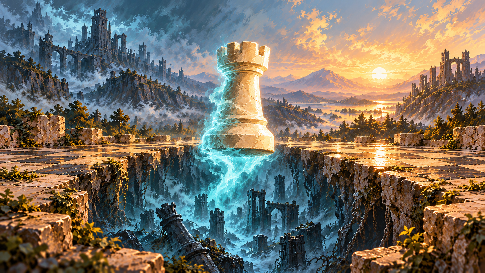
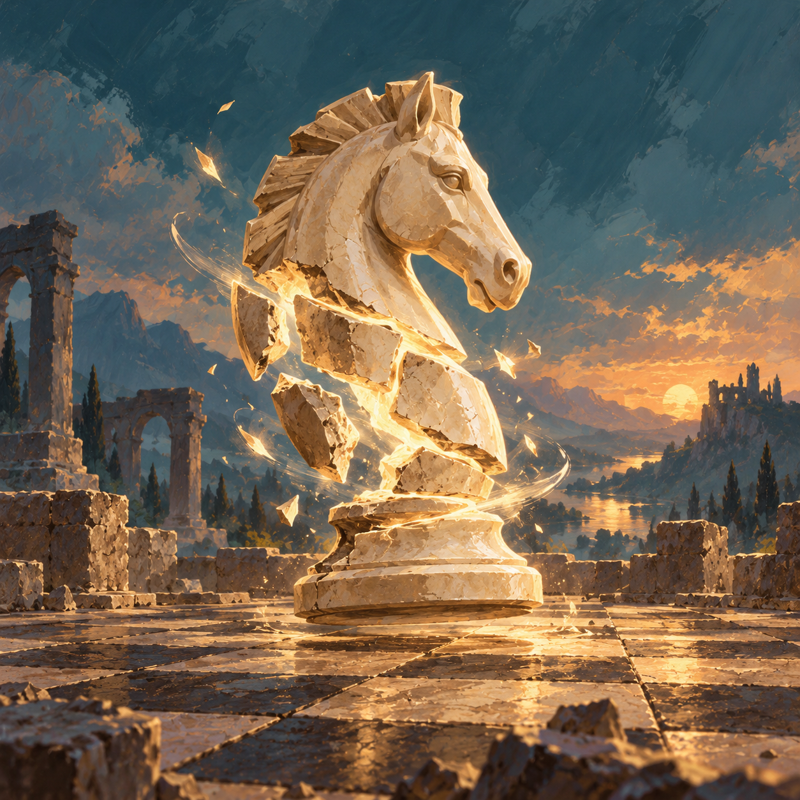
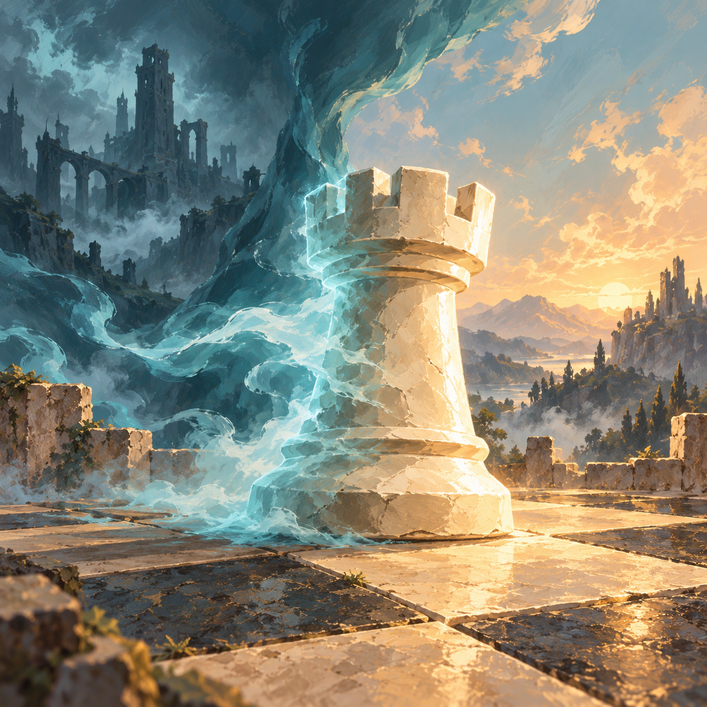

The rook rises from a ruined world beneath the board, becoming solid in the dawn light. This landscape composition fits the card window.

Called Home · rising from the dead world
The rook rises from a ruined world beneath the board, becoming solid in the dawn light. This landscape composition fits the card window.

An ivory knight draws itself back together with golden light.

A spectral rook returns through mist and becomes solid in the dawn light.
